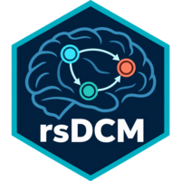

rsDCM is an R package for Dynamic Causal Modelling (DCM) of functional MRI data. It is an R port of the corresponding routines in the MATLAB SPM25 toolbox, with optimizations for the integration and Gauss-Newton inner loops.
Installation
From GitHub (development version):
# install.packages("remotes")
remotes::install_github("Kay202/rsDCM")From CRAN, once published:
install.packages("rsDCM")Quick start
library(rsDCM)
# Three-region toy DCM shipped with the package (482 scans, one input)
data(toy_dcm)
# Invert. Takes roughly 75 seconds on this dataset.
fit <- dcm_estimate(toy_dcm)
# Posterior connectivity
round(fit$Ep$A, 3)
# Variational free energy (log-evidence proxy)
fit$FThe introductory vignette has more detail:
vignette("introduction", package = "rsDCM")What’s exported
User-facing entry points:
-
dcm_estimate(): full DCM inversion. -
dcm_fmri_priors(): build priors from adjacency arrays. -
dcm_nlsi_GN(): variational Laplace optimisation (lower-level). -
dcm_int(): bilinear-system integrator (lower-level). -
dcm_fx_fmri(),dcm_gx_fmri(): neural and BOLD equations. -
dcm_evidence(): AIC / BIC summary of a fit. -
rsdcm_options(): adjust runtime options (e.g. FD step).
Group-level (Parametric Empirical Bayes):
-
dcm_peb_prepare(),dcm_peb_run(): fit a second- or third-level PEB. -
dcm_peb_of_pebs(): third-level PEB-of-PEBs over a directory of subject PEBs. -
dcm_peb_design(): build the between-subject design matrix. -
dcm_peb_files(),dcm_peb_load(): locate/load subject PEBs (.rdsor MATLAB.mat).
Group-level (robust and sparse, Student-t + pMOM):
-
rsdcm(): robust, sparse group DCM using Student-t subject weighting, a nonlocal product-moment (pMOM) spike-and-slab prior (inclusion probabilities), and ReML variance components. -
rsdcm_fit(): wrapper that assembles the group model from a list ofdcm_estimate()fits.
The narps_dcm dataset (48 subjects, from the openly shared NARPS data) is the runnable real-data example for rsdcm().
Lower-level utilities (dcm_vec, dcm_inv, dcm_logdet, …) are also exported and have their own help pages, so you can call them directly as dcm_vec(). They are marked @keywords internal, which only keeps them out of the package index. Access is not restricted, and the ::: operator is not needed for them.
Acknowledgment
rsDCM is a derivative work of the MATLAB SPM25 toolbox, distributed under GPL-2 by the Wellcome Centre for Human Neuroimaging. See LICENSE.note for the list of ported routines and the references.
References
- Arhin, G., Sanyal, N. (2026). Robust and sparse group dynamic causal modeling via Student-t parametric empirical Bayes and nonlocal priors. arXiv:2609.06379. https://doi.org/10.48550/arXiv.2609.06379
- Botvinik-Nezer, R., Holzmeister, F., Camerer, C.F., et al. (2020). Variability in the analysis of a single neuroimaging dataset by many teams. Nature, 582(7810), 84-88. https://doi.org/10.1038/s41586-020-2314-9
- Friston, K.J., Harrison, L., Penny, W. (2003). Dynamic causal modelling. NeuroImage, 19(4), 1273-1302. https://doi.org/10.1016/S1053-8119(03)00202-7
- Friston, K.J., Mattout, J., Trujillo-Barreto, N., Ashburner, J., Penny, W. (2007). Variational free energy and the Laplace approximation. NeuroImage, 34(1), 220-234. https://doi.org/10.1016/j.neuroimage.2006.08.035
- Valério, D., Peres, A., Bergström, F., Seidel, P., Almeida, J. (2025). Neural and behavioral similarity-driven tuning curves for manipulable objects. Imaging Neuroscience, 3. https://doi.org/10.1162/imag_a_00482